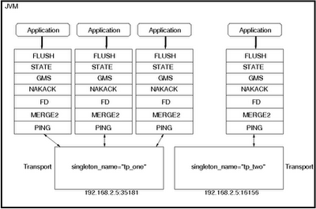

A transport in a JGroups application is a heavy-weight object with significant overhead and a majority of the JGroups entities (remote procedure call, replicated hash map, etc.) generally require their dedicated channels, and hence transports for communication. However, by sharing a transport between multiple channels, it is possible to optimize available resources. (Remember that each transport occupies a thread pool and a socket.) For this purpose, one just needs to set the singleton_name attribute for the transport.

Unfortunately, it is not possible to alter the singleton_name attribute of a transport in your Java program using something like:
String singletonName = "yabba";
JChannel channel = new JChannel();
channel.getProtocolStack().getTransport()
.setValue("singleton_name", singletonName)At the moment, for this purpose, you have to alter the XML specification of the channel you are using. (See Bela Ban’s reply to Setting Up a Shared Transport post in JGroups mailing-list.)
For convenience, I put together a ChannelFactory to create channels sharing the same transport as follows.
final class ChannelFactory {
private static ChannelFactory instance = null;
private static final String singletonName = "shared";
private List<jchannel> channels;
private ChannelFactory() {
channels = new ArrayList<jchannel>();
}
synchronized JChannel create() throws Exception {
JChannel channel = new JChannel(
this.getClass().getClassLoader()
.getResource("META-INF/channel.xml"));
channels.add(channel);
return channel;
}
synchronized void clear() {
for (JChannel channel : channels) {
channel.disconnect();
channel.close();
}
channels.clear();
}
static synchronized ChannelFactory getInstance() {
if (instance == null)
instance = new ChannelFactory();
return instance;
}
}Later, I copied (say) udp.xml from JGroups sources to META-INF/channel.xml. And I added singleton_name="shared" line to the protocol specification in META-INF/channel.xml file.
Now, my individual classes make calls to ChannelFactory.getInstance().create() to get a channel dedicated to them. And while program shuts down, I just make a call to ChannelFactory.getInstance().clear() to tidy things up.